Région 1 · les 15 niveaux en blocs (version 2, plus difficile)
Aux nouvelles règles : la réserve du sceptre (la jauge bleue de chaque niveau, sans recharge), les boucliers mal scellés qui assomment si on les tire trop longtemps, le diamant facultatif hors du chemin (en jaune), ce qui ouvre la porte (l'anneau rouge relié à la porte, mécanisme encore à choisir).
Gestes numérotés : T tirer, P pousser, J jeter la lance. En rouge, l'erreur ; l'étoile rouge, les frères assommés. Notes sur 5 : l'énigme et l'habileté.
Ta réponse, par numéros : ceux qui respectent le concept et sont amusants, ceux à refaire.
Dessins d'intention, pas encore joués : chaque niveau gardé sera construit en blocs dans le vrai moteur et prouvé jouable. Force du sceptre supposée ×2.
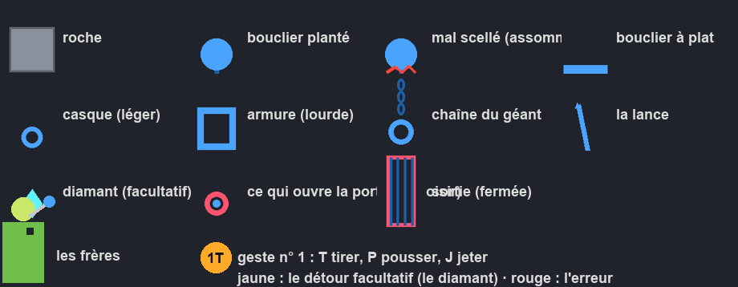
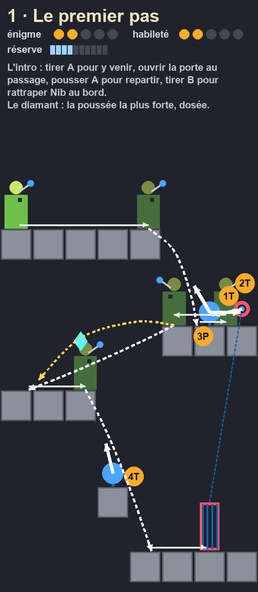
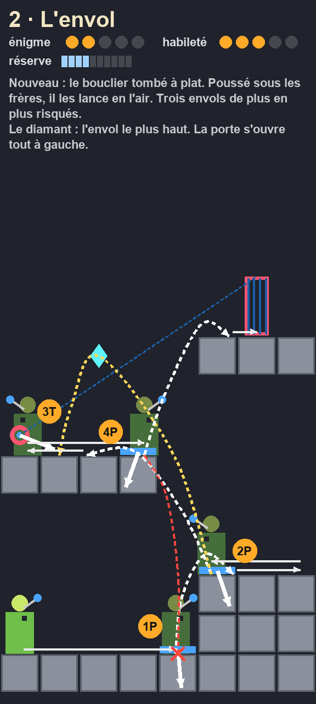
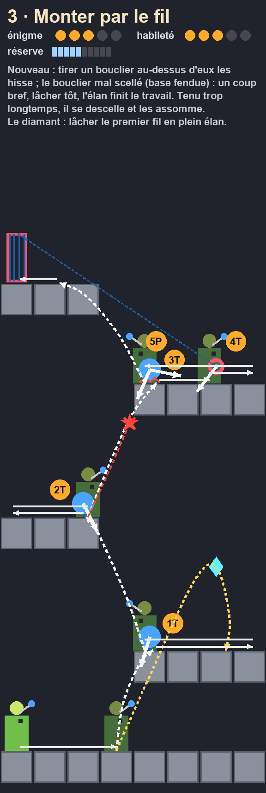
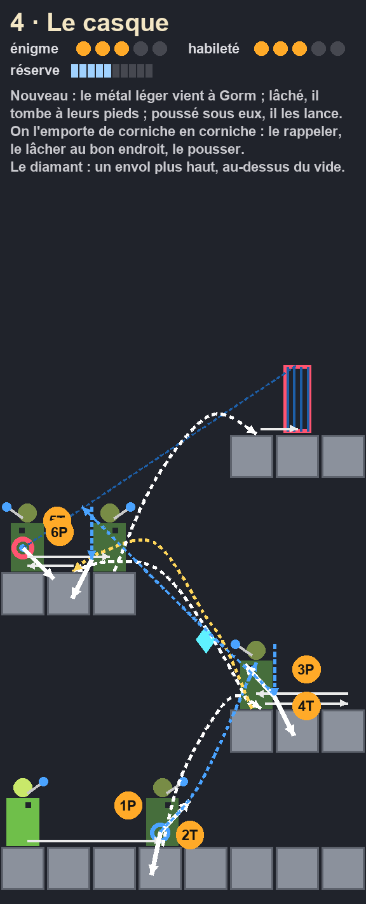
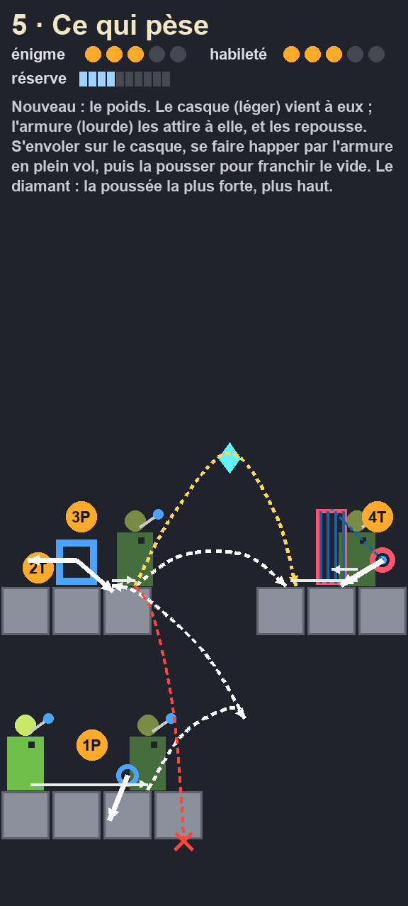
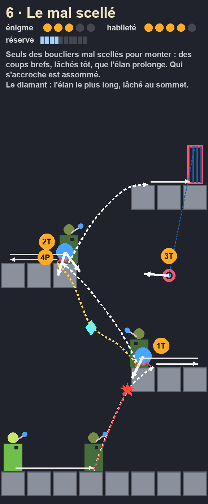
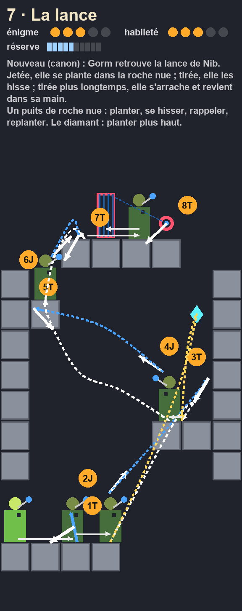
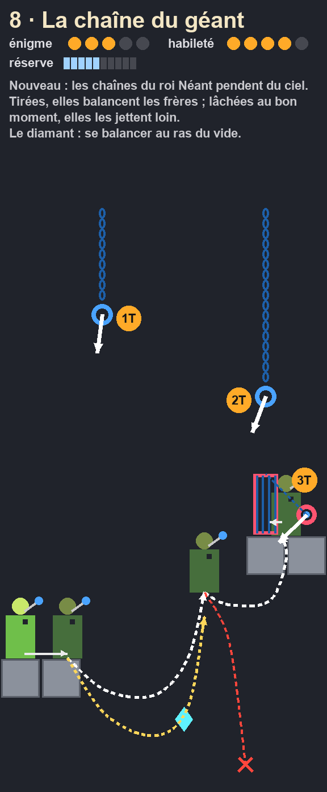
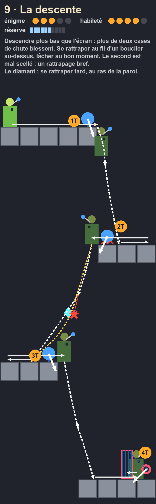
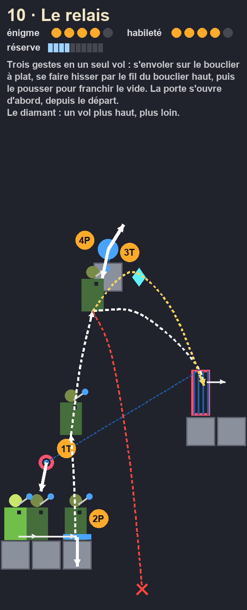
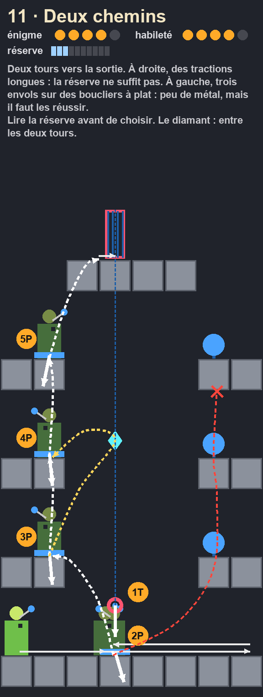
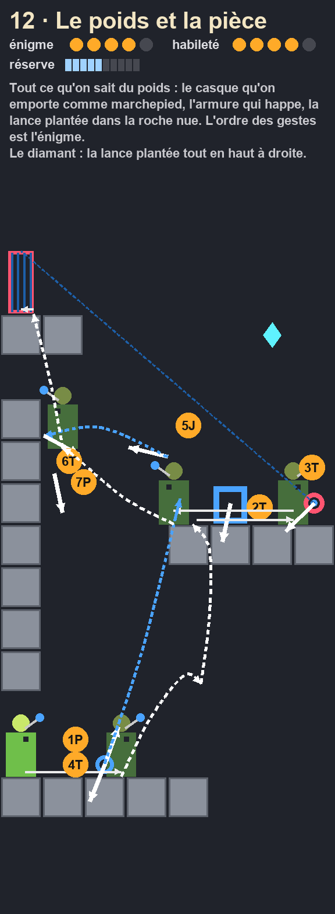
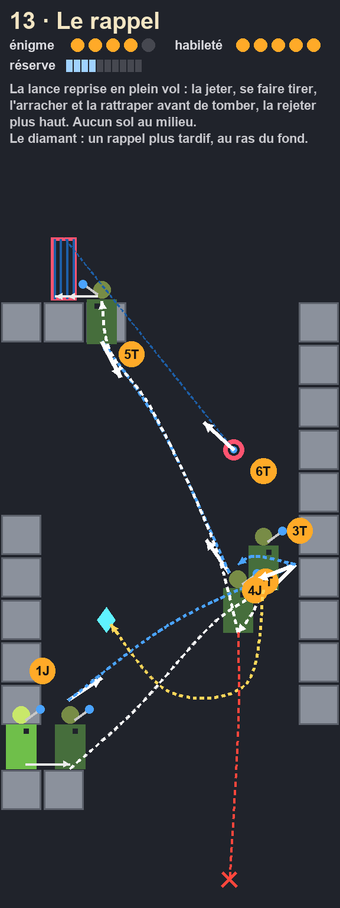
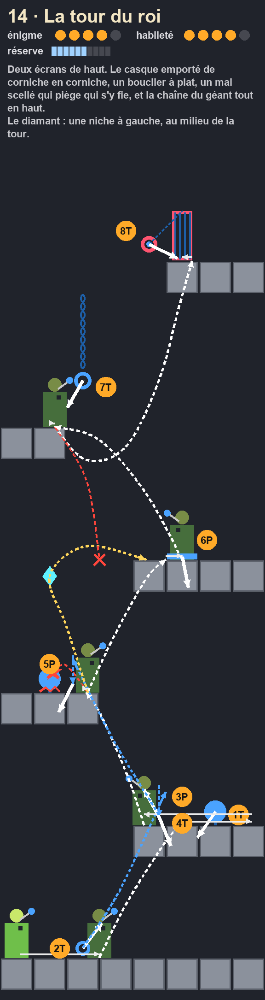
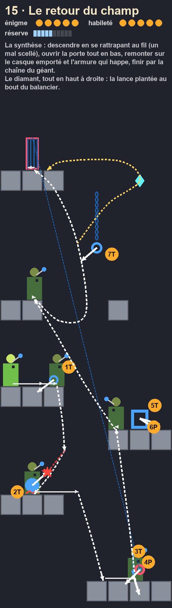